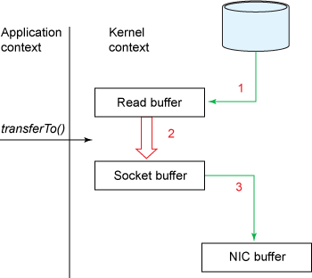

Java 面试问题整理
[TOC]
Java 程序如何做到一次编写，到处运行
java 代码源文件经过 javac 编译期编译为 .class 文件，.class 文件不包含处理器本机代码，而是包含字节码 - JVM 的机器语言。启动器使用虚拟机运行程序。

由于 JVM 可在许多不同的操作系统上使用，因此相同的 .class 文件可以在不同系统上运行。
JDK 和 JRE 的区别
JRE(Java Runtime Environment)是 JVM 执行代码的基础。JDK 是 Java 程序开发所有特性的工具，包含JRE，编译，开发和调试工具。
什么是按值传递，什么是引用传递，Java 中是值传递还是引用传递
值传递：传递到方法中的形参值只是实参值的一个副本，对形参的修改不会影响之前的值；
引用传递：形参只是实参的别名。它指向真正的实参，对形参所做的任意修改都反映在实参中。
Java中都是值传递，基本类型值传递，对象类型是引用值传递，也就是说值的内容是对象的引用。
详见：https://www.zhihu.com/question/31203609
通过 new 创建 String 对象和字面量形式创建有什么区别
当使用 new 创建 String 对象时它总是会在堆内存中创建一个新对象，使用字面量创建时则会优先返回字符串常量池已存在的对象引用，否则，会创建一个新对象，并放入字符串池以备后用。
java7 之前字符串池存在在永久代，很难被回收，导致 OOM；之后移到了堆内存；
除了字符串池，包装类使用包装类缓存来实现同样的效果，比如 Integer、Byte、Short、Long、Character 使用内部类维护对应的缓存。
如何跳出多重循环
通过对代码块加标签的形式为代码块命名，标签为任意有效的标识符后面加冒号，通过 break 标签名; 跳转到代码块所在结束范围。
1 |
|
命名代码块同样适用于 continue 的跳转，同 goto 不同，标签块只能在自身代码块闭合范围内跳转。
1 |
|
JDK 和 JRE 的区别
JRE(Java Runtime Environment)是 JVM 执行代码的基础。JDK 是 Java 程序开发所有特性的工具，包含 JRE，编译，执行 Java 应用。
静态方法能否重写，静态方法能否访问非静态内容
不能，虽然子类可以包含同名静态方法，但并不属于重写。重写相对于类实例而言，子类重写父类的方法实现不同的行为，方法重写是运行时多态的重要表现。1.8之前静态方法、变量存储在堆的永久代中，它们是class相关的数据，而不是实例，具体如何存储取决于JVM，不同JVM略有差异
hashCode 和 equals 方法主要是做什么
equasl 去比较两个对象是否相等，重写后用来比较业务相等，重写 equals 必须重写 hashCode。
hashCode 方法不是用于提供对象的唯一标识符，而是将对象的状态(即成员字段的值)摘要为一个整数。此值主要由某些基于哈希的数据结构(例如 Map 和集合)使用，以有效地存储和检索对象。
hashCode 和 equals 的一些基本约定，比如：equals 相等，hashCode 一定要相等；重写了 hashCode 也要重写 equals；hashCode 需要保持一致性，状态改变返回的哈希值仍然要一致。equals 的对称、反射、传递等特性。
ArrayList 和 LinkedList 区别
ArrayList 和 LinkedList 都实现了 List 接口，顺序为添加时的顺序，可以包含重复元素。
LinkedList :
- 除了实现 List 接口外，
LinkedList类还为在列表的开头及结尾get、remove和insert元素提供了统一的命名方法。这些操作允许将链接列表用作堆栈、队列或双端队列。 - 通过代价较低的在 List 中间进行的插入和删除操作，提供了优化的顺序访问，LinkedList 在随机访问相对比较慢，但是它的特性集较 ArrayList 更大。
- 由双向链表实现，其中的每个对象包含数据的同时包含指向链表的前后引用。
ArrayList:
- 它长于随机访问元素，
- 在List的中间插入和移除元素时较慢。
- ArrayList底层由数组支持。
JDBC，JDBC Driver作用
Java数据库连接（JDBC）是用于编程语言Java的应用程序编程接口（API），它定义了客户端如何访问数据库。它是一种基于Java的数据访问技术，用于Java数据库连接。
JDBC驱动程序提供JDBC API提供的抽象类的特定于供应商的实现。 每个驱动程序必须提供以下java.sql包类的实现：Connection，Statement，PreparedStatement，CallableStatement，ResultSet和Driver。
DriverManager、Statement、ResultSet、PreparedStatement
DriverManager类是JDBC的管理层，作用于用户和驱动程序之间，跟踪可用的驱动程序，建立数据库和驱动程序之间的连接，记录驱动程序运行的一些信息。
Statement 对象用于将 SQL 语句发送到数据库中。
ResultSet 包含符合 SQL 语句中条件的所有行，通过一套 get 方法来获取当前行中不同列的数据。 使用 next 方法移动当前行。
数据库连接池作用
关于数据库连接的打开和关闭，与数据库的交互可能是昂贵的。 特别是，当数据库客户端数量增加时，此成本非常高并且消耗了大量资源。应用程序服务器在启动时获得数据库连接池并将其维护在池中。 连接请求由驻留在池中的连接提供。 在连接结束时，请求将返回到池中，并可用于满足将来的请求。
对象的构建顺序
初始化子类时，先初始化父类
初始化父类的静态变量和静态代码块
初始化子类的静态变量和静态代码块
初始化父类的非静态变量，初始化父类的构造函数
如果父类的构造函数中调用的方法被子类重写，那么调用的会是子类的方法
初始化子类的非静态变量，初始化子类的构造函数
基类静态（按定义顺序）-> 子类静态 -> 基类非静态 -> 基类构造 -> 子类非静态 -> 子类构造
Servlet 的生命周期：
实例化 --> 初始化 --> 服务 --> 销毁
- 当 servlet 第一次被调用的时候，会触发 init 函数，该函数通过web.xml配置文件由web服务器自动实例化 servlet 装载到内存， init 函数只会被调用一次
- 然后去调用 servlet 的 service 函数，由 service 方法判断请求的方式，get、post或者其它，调用相应的方法
- 当 web 应用 reload 或者关闭 tomcat 或者 关机 都会去调用 destroy 函数，该函数就去销毁 servlet
-
表单提交数据 get 请求和 post 请求的区别：
• 从安全性看 get < post, get 提交的数据会在浏览器的地址栏显示
• 从提交的内容的大小来看 get < post get提交的数据不能大于 2K ，而 Post 从理论上不受限制， 但是实际的变成中建议不要大于 64K
• 从请求响应速度看： get > post , get 要求服务器立即处理请求，而 post 请求可能形成一个队列请求
Java8 问题整理
Java8 添加了哪些新特性
Java8 添加了很多新特性。但最主要的是下面的内容：
- Lambda 表达式 - 一种新的语言特性，允许将操作视为对象
- 方法引用 - 允许直接使用方法的名称引用去定义 Lambda
- Optional - 用于表达可能存在的特殊包装类
- 函数接口 - 具有最多一个抽象方法的接口，可以使用 Lambda 表达式提供实现
- 默认方法 - 除了使用抽象方法，让我们能够在接口中添加完整的实现
- Nashorn，JavaScript 引擎 - 一种基于 Java 的引擎，用于执行和评估 JavaScript 代码
- 流（Stream）接口 - 一个特殊的迭代器类，允许以函数方式处理对象集合
- CompletableFuture - 为复杂的异步编码提供了可行性
- Date 接口 - 一个改进的，不可改变的 JodaTime 灵感的 Date API
除了这些新功能外，还有很多在编译器和 JVM 级别下的功能增强。
什么是方法引用
方法引用是一种 Java8 结构，它允许在不调用方法时引用方法。用于将方法视为 Lambda 表达式。它只能作为语法糖来减少一些 lambda 的冗长。比如下面的代码：
1 | (0) -> o.toString(); |
可以这样写：
1 | Object::toString(); |
方法引用可以使用双冒号来分割类、对象名称、方法名。它有不同的变体，如构造函数引用：
1 | String::new; |
静态方法引用：
1 | String::valueOf; |
绑定实例方法引用：
1 | str::toString; |
未绑定实例方法引用：
1 | String::toString; |
什么是 Optional？我们怎么使用它？
可选是 Java 8 中的一个新类，它封装了一个可选值，即是否存在的值。它是对象的包装器，您可以将其视为零或一个元素的容器。
Optional 具有特殊的 Optional.empty() 值而不是被包裹的 null。因此，在许多情况下，可以使用它来代替可空值来消除 NullPointerException（NPE）。
Optional 是一种返回类型的方法，以前会返回 null。这样的方法需要你编写样板代码来检查返回值，有时可能会忘记进行防御性检查。在 Java 8 中，Optional 返回类型明确要求您以不同方式处理 null 或非 null 包装值。
例如，Stream.min() 方法计算值流中的最小值。但是如果流是空的呢？如果它不是 Optional，则该方法将返回 null 或抛出异常。
但它返回一个 Optional 值，可能是 Optional.empty()（第二种情况）。这使我们可以轻松处理这种情况：
1 | int min1 = Arrays.stream(new int[]{1, 2, 3, 4, 5}) |
Optional 不能用在实体的字段上，因为它没有实现 Serializable 接口。
描述标准库中的一些函数接口
java.util.function 包中有很多功能接口，更常见的包括但不限于：
- Function - 它接受一个参数并返回结果 T -> R
- Consumer - 它需要一个参数并且不返回接口（表示副作用）T -> void
- Supplier - 它不需要参数并返回结果 () -> R
- Predicate - 它需要一个参数并返回一个布尔值 T -> boolean
- BiFunction - 它需要两个参数并返回一个结果 (T, U) -> R
- BinaryOperator - 它类似于 BiFunction，接受两个参数并返回结果。两个参数和结果都是相同的类型 (T, T) -> T
- UnaryOperator - 它类似于 Function，只接受一个参数并返回相同类型的结果 T -> T
函数接口的作用
函数接口为可以为 lambda 表达式和方法引用提供目标类型。
什么是 default 方法，我们可以用来做什么
default 方法是接口中具有实现的方法。
我们可以使用默认方法向接口添加新功能，同时保持与已实现接口的类的向后兼容性：
通常，当一个新的抽象方法被添加到接口时，所有实现类都将中断，直到它们实现新的抽象方法。在 Java 8 中，通过使用默认方法解决了这个问题。
例如，Collection 接口没有 forEach 方法声明。因此，添加此类方法只会破坏整个集合 API。
Java 8 引入了默认方法，以便 Collection 接口可以具有 forEach 方法的默认实现，而不需要实现此接口的类来实现相同的方法。
什么是 Lambda 表达式以及它用于什么
简单来说，lambda 表达式是一个可以作为对象引用和传递的函数。
Lambda 表达式引入了 Java 中的函数式处理，并有助于编写紧凑且易于阅读的代码。
因此，lambda 表达式是匿名类作为方法参数的自然替代品。它们的主要用途之一是定义函数接口的内联实现。
Spring 问题整理
使用 Spring 有什么好处
Spring IOC 容器
ApplicationContext 是 Spring IOC 的核心容器，它是 BeanFactory 的超集。BeanFactory 是 Spring 的核心接口，其实现类必须支持 Bean 的生命周期接口，初始化的顺序如下：
-
BeanNameAware’s {@code setBeanName}
-
BeanClassLoaderAware’s {@code setBeanClassLoader}
-
BeanFactoryAware’s {@code setBeanFactory}
-
EnvironmentAware’s {@code setEnvironment}
-
EmbeddedValueResolverAware’s {@code setEmbeddedValueResolver}
-
ResourceLoaderAware’s {@code setResourceLoader}
-
(ApplicationConetxt特有方法：)
ApplicationEventPublisherAware’s {@code setApplicationEventPublisher}
-
(ApplicationConetxt特有方法：)
MessageSourceAware’s {@code setMessageSource}
-
(ApplicationConetxt特有方法：)
ApplicationContextAware’s {@code setApplicationContext}
-
(ApplicationConetxt特有方法：)
ServletContextAware’s {@code setServletContext}
-
(ApplicationConetxt特有方法：)
{@code postProcessBeforeInitialization} methods of BeanPostProcessors
-
InitializingBean’s {@code afterPropertiesSet}
-
a custom init-method definition 自定义的 init 方法
-
{@code postProcessAfterInitialization} methods of BeanPostProcessors
关闭bean工厂时，以下生命周期方法适用：
* {@ code postProcessBeforeDestruction} DestructionAwareBeanPostProcessors 的方法
* DisposableBean 的{@code destroy}
* 自定义销毁方法
BeanFactory 和 ApplicationContext 区别 ？
主要体现在容器级别之间的区别以及对引导的影响。
除非有充分的理由，否则应使用 ApplicationContext，将 GenericApplicationContext 及其子类 AnnotationConfigApplicationContext 作为自定义引导的常见实现。这些是用于所有常见目的的 Spring 核心容器的主要入口点：加载配置文件，触发类路径扫描，以编程方式注册 Bean 定义和带注解的类，以及（从5.0版本开始）注册功能性 Bean 定义。
因为 ApplicationContext 包含 BeanFactory 的所有功能，所以通常建议在 ApplicationContext 上使用，除非需要对 Bean 处理的完全控制。在 ApplicationContext（例如 GenericApplicationContext 实现）中，按照惯例（即， 按Bean 名称或 Bean 类型（尤其是后处理器））检测多种 Bean，而普通的 DefaultListableBeanFactory 不知道任何特殊的 Bean。
对于许多扩展的容器功能，例如注解处理和 AOP 代理，BeanPostProcessor 扩展点至关重要。 如果仅使用普通的 DefaultListableBeanFactory，则默认情况下不会检测到此类后处理器并将其激活。 这种情况可能会造成混乱。
下表列出了 BeanFactory 和 ApplicationContext 接口和实现所提供的功能。
| 功能 | BeanFactory |
ApplicationContext |
|---|---|---|
| Bean 实例化/编织 | Yes | Yes |
| 集成生命周期管理 | No | Yes |
| 自动 BeanPostProcessor 注册 | No | Yes |
| 自动 BeanFactoryPostProcessor 注册 | No | Yes |
| 方便的 MessageSource 访问（用于内部化） | No | Yes |
| 内置的 ApplicationEvent 发布机制 | No | Yes |
Spring Bean 的作用范围
- 单例（默认 将单个bean定义范围限定为每个Spring IoC容器的单个对象实例。）
- 原型（将单个bean定义范围限定为任意数量的对象实例。）
- request（将单个bean定义范围限定为单个HTTP请求的生命周期。也就是说，每个HTTP请求都有自己的bean实例，它是在单个bean定义的后面创建的。）
- session（将单个bean定义范围限定为HTTP会话的生命周期。）
- application（将单个bean定义范围限定为ServletContext的生命周期。）
- websocket（将单个bean定义范围限定为WebSocket的生命周期。）
- 线程 （3.0提供，但未配置）
中间 request、session、application、websocket 只有在使用 Web 感知的 Spring ApplicationContext 实现（例如XmlWebApplicationContext）时，
Spring Bean 的生命周期回调
生命周期回调可以用在多个方面，比如 JDBC 的关闭，服务的启动和销毁。比如：
1 |
|
要与容器的bean生命周期管理进行交互，可以实现 Spring InitializingBean 和 DisposableBean 接口。容器为前者调用 afterPropertiesSet()，为后者调用destroy()，让bean在初始化和销毁bean时执行某些操作。
JSR-250 @PostConstruct 和 @PreDestroy 注释通常被认为是在现代Spring应用程序中接收生命周期回调的最佳实践。使用这些注释意味着您的bean不会耦合到特定于Spring的接口。
如果您不想使用JSR-250注释但仍想删除耦合，请考虑使用init-method 和 destroy-method 对象定义元数据。
要让注入Bean调用指定的构造方法，可以在注解 @Bean 中指定 initMethod 和 destroyMethod 的方法名。
当这三种配置同时存在时，他们的执行顺序如下，销毁相同：
- 使用
@PostConstruct注释的方法 - 由
InitializingBean回调接口定义的afterPropertiesSet() - 自定义的
initMethod方法
启动和停止应用回调
Lifecycle 接口为具有自己的生命周期要求的任何对象定义了基本方法（例如启动和停止某些后台进程）。
当 ApplicationContext 接到开始或停止信号时（比如，运行时的停止/重启场景），他将级联调用上下文中的所有 Lifecycle 实现。具体调用会委托给 LifecycleProcessor 完成。
默认的 Lifecycle 并没有细粒化控制自动启动，如果要对特定的 bean 自动启动，需要实现 SmartLifecycle。
DefaultLifecycleProcessor 默认处理会在应用启动时检测自动启动的 Bean，并调用 start 方法。
depends-on定义了显式的依赖，但是有时候我们只知道前后，并不确定具体依赖顺序。 SmartLifecycle 接口定义了另外一种方法 getPhase() 。
启动时，phase 越小的对象最先启动；停止时，越大的越先停止。
默认的 Lifecycle 的 phase 是 0，因此，负值表示这个对象比标准组件启动快。
在非 web 项目中，可以通过在 JVM 中注册关闭钩子实现关闭回调，registerShutdownHook() 方法定义在 ConfigurableApplicationContext 接口中。
元数据是什么，Spring 的配置元数据来自于哪
元数据是描述其他数据的数据。 Meta 是一种前缀，在大多数信息技术中，用法意味着“基础定义或描述”。元数据总结了有关数据的基本信息，可以更轻松地查找和处理特定的数据实例。
配置元数据来自于多个方面，包含但不局限于：
- 注解配置
- java 配置类
- xml 配置文件
Spring 是否支持运行时注册新 Bean
在运行时注册新bean（并发实时访问工厂）不受官方支持，并且可能导致并发访问异常，bean容器中的不一致状态，或两者兼而有之。
Spring 是否支持添加用户自己注册的实例对象
除了包含有关如何创建特定 bean 信息的 bean 定义之外， ApplicationContext 实现还允许注册在容器外部（由用户）创建的现有对象。这是通过 getBeanFactory() 方法访问 ApplicationContext 的 BeanFactory 来完成的，该方法返回 BeanFactory 的 DefaultListableBeanFactory 实现。 DefaultListableBeanFactory通过registerSingleton(..)和 registerBeanDefinition(..) 方法支持此注册。
Spring Bean 命名约定
bean 名称以小写字母开头，并从那里开始驼峰。此类名称的示例包括 accountManager，accountService，userDao，loginController 等。
但是，在（不常见的）特殊情况下，当有多个字符并且第一个和第二个字符都是大写字母时，原始大小写将会保留。这些规则与 java.beans.Introspector.decapitalize（Spring 在此处使用）中定义的规则相同。
实例化 Bean 方式
- 构造方法实例化（空的构造方法），或者注入依赖（代参构造）
- 静态工厂方法实例化
- 实例工厂方法实例化
如果要为静态嵌套类配置 bean 定义，则必须使用嵌套类的二进制名称。
例如，如果在 com.example 包中有一个名为 SomeThing 的类，并且此 SomeThing 类具有一个名为 OtherThing 的静态嵌套类，则 bean 定义上的 class 属性值将为com.example.SomeThing$OtherThing。
请注意，在名称中使用 $ 字符可以将嵌套类名与外部类名分开。
使用 xml 和注解配置 Bean 区别
xml 通常将这些 bean 配置为顶级
使用 xml 配置 bean 时，我们需要指明 bean 的实现类类名，以便反射实例化注册到容器，就是上述描述的方法；
@Bean 注解大多用在 @Configuration 配置类中；
使用注解时，我们可以显式的去返回对象的实例来进行配置，实例时也可以传入其他实例方法来依赖Bean，比如：
1 |
|
在 bean 直接调用同一个类中的其他 @Bean 方法时，不得将@Configuration 类及其工厂方法标记为 final 或 private，因为它需要在运行时对每个这样的配置类进行 CGLIB 子类化。
在 @Component 组件或者普通对象中直接调用其它 @Bean 方法也不可行，因为这是标准的Java方法调用，Spring不会通过 CGLIB 代理拦截调用。
也可以加入其它注解来共同配置 Bean，比如：
- @Profile – 允许选择性地根据配置包含某些bean
- @Scope – 更改 bean 的范围
- @Lazy – 仅在默认单例范围的情况下起作用
- @DependsOn – 在创建此 bean 之前强制创建特定的其他bean。
- @Primary – 是一种解决注入点级别歧义的机制，如果需要按类型匹配来注入Bean，但是符合类型的有多个。
- @Order – 设置优先级
已经有了 ref 引用依赖，为什么需要 Depend-on
- 可能 Bean 之间不是显式的依赖，但的确需要有初始化顺序
- 当多个 Bean 存在循环依赖关系时
- 或者仅仅想在一个 Bean 之前初始化另一个 Bean
依赖注入的两种方式
- 基于构造方法依赖注入（调用具有多个参数的构造方法)
- 基于 Setter 的依赖注入
- 混合使用
由于您可以混合基于构造函数和基于 setter 的 DI ，因此将构造函数用于强制依赖项和 setter 方法或可选依赖项的配置方法是一个很好的经验法则。请注意，在 setter 方法上使用@Required注释可用于使属性成为必需的依赖项。
Spring 团队通常提倡构造函数注入，因为它允许您将应用程序组件实现为不可变对象，并确保所需的依赖项不为null.此外，构造函数注入的组件总是以完全初始化的状态返回到客户端（调用）代码。作为旁注，大量的构造函数参数是一个糟糕的代码气味，暗示该类可能有太多的责任，应该重构以更好地解决关注点的正确分离。
Setter 注入应主要仅用于可在类中指定合理默认值的可选依赖项。否则，必须在代码使用依赖项的任何位置执行非空检查。 setter 注入的一个好处是 setter 方法使该类的对象可以在以后重新配置或重新注入。因此，通过 JMX MBean 进行管理是二次注入的一个引人注目的用例。
Spring AOP 的编织是在什么时候
运行时，也就是说都是动态代理。 AspectJ 是在编译时。
如何扩展 Spring 容器
通常，我们不需要子类化 ApplicationContext 实现类。相反，可以通过插入特殊集成接口的实现来扩展 Spring IOC 容器。
-
使用
BeanPostProcessor来自定义 BeansBeanPostProcessor 接口定义了回调方法，你可以去实现它以提供自己的（或覆盖容器的默认）实例化逻辑，依赖解析逻辑，等等。如果要在 Spring 容器完成实例化，配置和初始化 bean 之后实现某些自定义逻辑，则可以插入一个或多个 BeanPostProcessor 实现。
该工厂钩子允许自定义修改新 bean 实例，例如检查标记接口或用代理包装它们。 ApplicationContexts 可以在其 bean 定义中自动检测 BeanPostProcessor bean，并将它们应用于随后创建的任何 bean。
该接口默认包含两个默认方法实现：
1
Object postProcessBeforeInitialization(Object bean, String beanName)
该方法在任何 bean 初始化回调之前将此 BeanPostProcessor 应用于给定的新bean实例（如 InitializingBean 的 afterPropertiesSet 或自定义 init 方法）。
1
Object postProcessAfterInitialization(Object bean, String beanName)
在任何 bean 初始化回调（如 InitializingBean 的 afterPropertiesSet 或自定义 init 方法）之后，将此 BeanPostProcessor 应用于给定的新 bean 实例。
-
使用
BeanFactoryPostProcessor来自定义配置元数据BeanFactoryPostProcessor 对 bean 的配置元数据进行操作。也就是说，Spring IOC 容器允许 BeanFactoryPostProcessor 读取配置元数据，并允许在容器实例化除 BeanFactoryPostProcessor 实例之外的任何 bean 之前更改元数据。
比如：
PropertyPlaceholderConfigurer该配置器可以读取配置文件中的占位符，并从外部文件或环境变量等拿到相应的值替换占位符：1
2
3
4
5
6
7
8
9
10
11<bean class="org.springframework.beans.factory.config.PropertyPlaceholderConfigurer">
<property name="locations" value="classpath:com/something/jdbc.properties"/>
</bean>
<bean id="dataSource" destroy-method="close"
class="org.apache.commons.dbcp.BasicDataSource">
<property name="driverClassName" value="${jdbc.driverClassName}"/>
<property name="url" value="${jdbc.url}"/>
<property name="username" value="${jdbc.username}"/>
<property name="password" value="${jdbc.password}"/>
</bean>然后我们可以在指定的外部文件中定义相应的属性：
1
2
3
4=org.hsqldb.jdbcDriver
=jdbc:hsqldb:hsql://production:9002
=sa
=root在配置文件找不到相应的属性时，默认也会从环境变量去寻找。你也可以自定寻找策略通过配置
systemPropertiesMode。 -
使用
FactoryBean自定义实例化逻辑FactoryBean 接口是 Spring IOC 容器实例化逻辑的可插拔点。如果你有一个复杂的初始化代码，用 Java 表示比较好，而不是（可能）冗长的 XML，你可以创建自己的 FactoryBean，在该类中编写复杂的初始化，然后将自定义 FactoryBean 插入容器。
注解是否比 XML 配置 Spring 更好？
每种方法都有其优点和缺点，通常，由开发人员决定哪种策略更适合他们。由于它们的定义方式，注解在其声明中提供了大量上下文，从而导致更短更简洁的配置。但是，XML 擅长在不触及源代码或重新编译它们的情况下连接组件。一些开发人员更喜欢将配置靠近源，而另一些开发人员则认为注释类不再是 POJO，而且配置变得分散且难以控制。
无论选择如何，Spring 都可以兼顾两种风格，甚至可以将它们混合在一起。值得指出的是，通过其 JavaConfig 选项，Spring 允许以非侵入方式使用注释，而无需触及目标组件源代码。
在注入 XML 之前执行注解注入。因此，XML 配置会覆盖通过这两种方法连接的相同属性的注解。
Sprng AOP 代理机制？
Spring AOP 使用 JDK 动态代理或 CGLIB 为给定目标对象创建代理。（只要有选择，JDK 动态代理就是首选）。
如果要代理的目标对象实现至少一个接口，则使用 JDK 动态代理。目标类型实现的所有接口都是代理的。如果目标对象未实现任何接口，则会创建 CGLIB 代理。
这是因为 CGLIB 默认会继承目标对象，然后重写被代理方法，所以必须要求被代理类不为 final 类，代理方法也不能为 final 类型。代理类如果有接口，也会通过实现接口的方法代理。CGLIB 是第三方框架，基于 ASM 提供的字节码操作。
JDK 动态代理是通过实现目标对象接口来代理方法的，所以只能代理接口暴露出去的方法。它是纯 java 实现。
CGLIB 和 JDK 动态代理都是在代理运行时动态生成 class 文件达到动态代理的目的。
静态代理唯一的缺点就是我们需要对每一个方法编写我们的代理逻辑，造成了工作的繁琐和复杂。AspectJ 就是为了解决这个问题，在编译成 class 字节码的时候在方法周围加上业务逻辑。复杂的工作由特定的编译器帮我们做。所以会有 AOP 有切面(Aspect)、连接点(joinpoint)、通知(advice)、切入点(Pointcut)、目标对象(target)等概念来定义代理的逻辑。
JPA 问题整理
HQL 和 JPQL 区别
Hibernate Query Language（HQL）和 Java Persistence Query Language（JPQL）都是以对象模型为中心的查询语言，与 SQL 本质上类似。JPQL 是一个受 HQL 影响很大的子集。但是，JPQL 查询始终是有效的 HQL 查询，反之则不然。
HQL 和 JPQL 都是非类型安全的方法来执行查询操作。 Criteria 查询提供了一种类型安全的查询方法。
Spring-Security 问题整理
Spring-Security 如何实现认证和授权
说一下 Spring-Security 几个重要的对象？
SecurityContextHolder， 提供对SecurityContext的访问。SecurityContext，保存Authentication和可能的特定于请求的安全信息。Authentication，以 Spring Security 特定的方式表示认证主体（一般为用户信息） principal。GrantedAuthority，反映授予主体的应用程序范围的权限。UserDetails，提供从应用程序的 DAO 或其他安全数据源构建 Authentication 对象所需的信息。UserDetailsService，在基于字符串的用户名（或证书 ID 等）中传递时创建 UserDetails。
Elasticsearch 问题整理
为什么选择使用 Elasticsearch
Elatiscsearch 如何选择查询
Elasticsearch 的索引和 Mysql 索引优势在哪里
如何实现类似 SQL 的 Like 查询
Redis 问题整理
Redis 的基本类型有哪些
Redis 是一个开源的，内存中的数据结构存储系统，它可以用作数据库、缓存和消息中间件。 它支持多种类型的数据结构，如 字符串（strings）， 散列（hashes）， 列表（lists）， 集合（sets）， 有序集合（sorted sets） 与范围查询， bitmaps， hyperloglogs 和 地理空间（geospatial） 索引半径查询。
数据库 问题整理
Mysql 底层如何存放数据
如何优化 SQL
Kafka 问题整理
如何提高消息吞吐量
生产者
-
开启消息压缩
compression.type：默认情况，消息不会被压缩。这个属性可以设置压缩算法：gzip,snappy,lz4,zstd。zstd和gzip比较平衡。 -
等待更多的消息进入批次
linger.ms：生产者在发送批次之前等待更多的消息加入批次的时间。增大这个值会增加延迟但可以提高吞吐量。 -
增大批次处理量
max.in.flight.requests.per.connection：生产者在收到服务器响应之前可以发送多少个批次消息。值越高，占用越多内存，吞吐量提升。 -
分配合理的分区数和消费者个数
如何保证消息顺序
Kafka 可以保证同一个分区里的消息是有序的。也就是说，如果生产者按照一定的顺序发送消息，broker 就会按照这个顺序把它们写入分区，消费者也会按照同样的顺序读取它们。
使用单个分区能最大程度保证消息的顺序，或者消息使用相同的 key。还需注意下面的配置。
生产者
retries：生产者从服务器收到错误时的重试次数
max.in.flight.requests.per.connection：生产者在收到服务器响应之前可以发送多少个批次消息。值越高，占用越多内存，吞吐量提升。
消息是否写入成功也是非常关键的，如果把 retries 设为非零整数，同时把 max.in.flight.requests.per.connection 设为比 1 大的数，那么第一批消息写入失败，而第二批写入成功，broker 重试第一个批次。此时第一个批次写入成功，那么两个批次的顺序就反了。
为了保证写入的顺序，不建议把 retries 设为 0。可以把 max.in.flight.requests.per.connection 设为 1，这样在生产者尝试发送第一批消息时，就不会有其他的消息发送给 broker。不过这样的会严重影响生产者的吞吐量，所以只有在对消息的顺序有严格要求的情况下。
如何保证消息被消费 Exactly-Once
由于各种故障，消息传递系统无法保证生产者和使用者应用程序之间的消息传递。根据客户端应用程序与此类系统交互的方式，可能会出现以下消息语义：
- 如果消息传递系统永远不会复制消息，但可能会漏掉偶尔的消息，则我们称 最多一次 (at-most-once)
- 如果它永远不会丢失一条消息，但可能会重复一条消息，则我们至少将其 至少一次 (at-least-once)
- 如果它发送所有消息时总是不重复，那将是 恰好一次 (exactly-once)
要保证消息只发送一次，得保证生产者发送给服务器的消息只成功一次，消费者也只消费一次。Kafka 代理和客户端应用引入事物可确保进行一次准确的交付。
生产者
acks：该参数指定了必须要有多少个分区副本收到消息，生产者才会认为消息写入是成功的。这个参数对消息丢失的可能性有影响。
acks=0不需要确认acks=1需要集群首领确认。首领确认纪录后失败，如果跟随者还没复制，则记录可能丢失。acks=all集群首领及其追随者都确认后，才会收到成功响应。安全性更高，吞吐率下降。
enable.idempotence：当设置为 “true” 时，生产者将确保每个消息的仅有一个副本被写入流中。如果为 “false”，则生产者由于代理失败等原因而重试，可能会将重试消息的副本写入流中。 请注意，启用幂等性要求 max.in.flight.requests.per.connection 小于或等于 5，重试大于 0，ack 必须为 “all”。 如果用户未明确设置这些值，则将选择合适的值。 如果设置了不兼容的值，则将引发 ConfigException。
幂等操作
由于生产者出错重试会导致消息重复，所以为了生产者成功提交的消息恰好一次，可以使用幂等操作来保证。如果发生导致生产者重试的错误，则相同的消息（仍由生产者多次发送）将仅写入到代理上的 Kafka 日志一次。对于单个分区，幂等生产者发送消除了由于生产者或代理错误而产生重复消息的可能性。要启用此功能并为每个分区获取一次精确的语义（即没有重复，没有数据丢失和有序的语义），请将生产者配置为 enable.idempotence = true。
事物
生产者通过设定事物 Id (transactional.id)，然后开启事物。
消费者
事物
isolation.level：控制如何读取事务写入的消息。如果设置为 read_committed，consumer.poll() 将仅返回已提交的事务性消息。如果设置为 read_uncommitted（默认），consumer.poll() 将返回所有消息，甚至是已中止的事务性消息。非事务性消息在两种方式下都返回。
手动提交
enable.auto.commit：该属性决定是否自动提交偏移量，默认为 true。为了避免数据出现重复和丢失，可以通过手动提交的方式自行提交偏移量。
是什么使 Kafka 如此之快
低延迟消息传递
Kafka 通过顺序 IO 操作日志避免了长时间的磁盘寻道；
零复制原则，避免了内核上下文和应用上下文的文件读取和发送，直接在系统内核上下文中进行文件读取和发送，避免了上下文切换的时间消耗和内存占用。
传统数据复制方法

零复制使用 java.nio.channels.FileChannel.transferTo()

批处理数据和压缩
高效压缩将同一批次的消息压缩在一起，并保持压缩在日志中，并且仅由使用者解压缩。支持的压缩算法：Zstd、Snappy、GZip 或 LZ4。
水平扩展
首先让我们了解什么是垂直扩展。可以说，对于传统的数据库服务器，当负载增加时，一种解决方法是添加更多资源，例如：CPU，RAM，SSD 等。这称为垂直扩展。它具有以下几个缺点：
- 每个硬件都有局限性，不能无限地向上扩展。
- 如果机器出现故障怎么办？通常需要停机。
水平扩展通过添加更多机器来解决相同的问题。 Kafka 能够为单个主题提供数千个分区，并将其分布在数千台计算机中，这意味着 Kafka 可以处理巨大的负载。